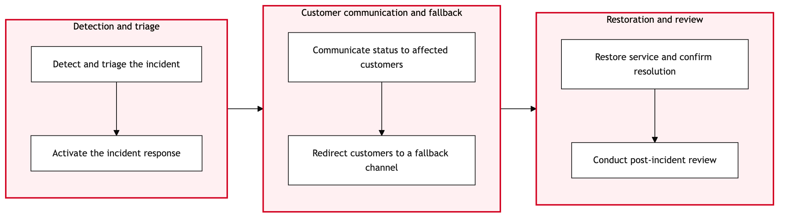

Updated 2026-08-18
Digital Channel Incident and Degraded Mode
Process flow
Click to zoom

Process steps
▼
Phase 1 — Detection and triage
2 steps
| Step | Activity | Role | System | Input | Output | KPI | Dec | Exc | Pain point |
|---|---|---|---|---|---|---|---|---|---|
| 1.1 | Detect and triage the incident | Digital Platform Engineer | DynatraceU | Monitoring alert | Triaged incident with severity classification | Triaged within 5 minutes of detection at 100 percent | N | N | Distinguishing a genuine customer-impacting outage from a monitoring false positive under pressure is difficult |
| 1.2 | Activate the incident response | Digital Platform Engineer | ITSM PlatformC | Triaged incident | Activated incident response with an incident commander | Activated within 10 minutes of triage for severity 1 incidents at 100 percent | N | N | Weekend and overnight incident response depends on on-call coverage that can be thinner than business hours |
▼
Phase 2 — Customer communication and fallback
2 steps
| Step | Activity | Role | System | Input | Output | KPI | Dec | Exc | Pain point |
|---|---|---|---|---|---|---|---|---|---|
| 2.1 | Communicate status to affected customers | Digital Platform Engineer | aircanada.comA | Active incident | Published status update | First status update published within 15 minutes of activation at 90 percent | N | N | A status page hosted on the same infrastructure as the outage may itself be unavailable |
| 2.2 | Redirect customers to a fallback channel | Digital Platform Engineer | Amazon ConnectA | Active incident | Customers directed to contact centre or airport counter | Fallback guidance published within 20 minutes of activation at 90 percent | N | N | Fallback redirection increases contact centre and airport volume that those channels may not be staffed to absorb |
▼
Phase 3 — Restoration and review
2 steps
| Step | Activity | Role | System | Input | Output | KPI | Dec | Exc | Pain point |
|---|---|---|---|---|---|---|---|---|---|
| 3.1 | Restore service and confirm resolution | Digital Platform Engineer | DynatraceU | Applied fix | Confirmed restored service | Restoration confirmed with monitoring evidence at 100 percent | N | N | A fix that resolves the symptom without addressing the root cause risks recurrence |
| 3.2 | Conduct post-incident review | Digital Platform Engineer | ITSM PlatformC | Resolved incident | Documented review with root cause and follow-up actions | Review conducted within 5 business days of resolution for severity 1 incidents at 100 percent | N | N | Follow-up actions from a review are not always tracked through to actual completion |
Swim lanes
Digital Platform Engineer1.1 1.2 2.1 2.2 3.1 3.2
Systems touched
DynatraceUITSM PlatformCaircanada.comAAmazon ConnectA
Key performance indicators
- Triaged within 5 minutes of detection at 100 percent
- First status update published within 15 minutes of activation at 90 percent
- Restoration confirmed with monitoring evidence at 100 percent
- Review conducted within 5 business days of resolution for severity 1 incidents at 100 percent
Risks and control points
- A digital outage displacing demand onto a contact centre and airport counters not staffed to absorb it
- A status page hosted on the same infrastructure as the outage becoming unavailable at the worst moment
- A fix resolving the symptom without addressing root cause, risking recurrence
- Follow-up actions from a post-incident review not being tracked through to actual completion
Air Canada Process Wiki — process and systems reference compiled from public sources
for IT Application Management and User Support pre-sales discovery.
Built 2026-08-20. Every system carries an evidence tier: tier C is an industry pattern and tier U is an open
question, and neither should be asserted as fact about Air Canada without confirmation in discovery.
Not affiliated with or endorsed by Air Canada. Air Canada, Aeroplan and Altitude are trademarks of Air Canada.